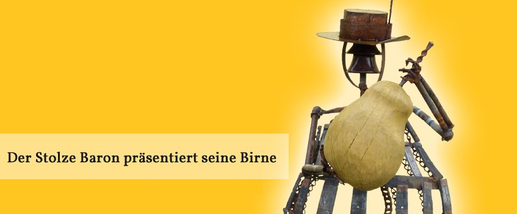

Mostheuriger
Bodenständig, innovativ, liebevoll.
Gemütlichkeit erwartet euch im fein gestalteten Heurigenlokal, im Sommer auch im lauschigen Innenhof des Vierkanthofes – wohl einer der schönsten Heurigenhöfe des Mostviertels.

Aus der Heurigenküche
Kalte Spezialitäten, von Bauernfamilien gemacht
Wir bieten kalte, regionale Spezialitäten aus der Heurigenküche – von Mostviertler Bauernfamilien mit Liebe gemacht. Traditionelles und Rustikales, aber auch Neues und Feines, neuerdings auch vegan. Dem Geschmack des Mostviertels auf der Spur.
Zu Gruppenterminen und Feiern kochen wir auch warm: feine Vorspeisen am Tisch, ein warmes Büffet nach euren Wünschen oder das „Bratl in der Rein“, dazu herrliche Desserts und eine g’schmackige Heurigenjause.
Die tagesaktuelle Jausen-Auswahl hängt an der Tafel im Lokal – ruft uns an, wenn ihr vorab wissen wollt, was gerade auf der Karte steht.
Offen ausgeschenkt
Alles selber für euch gemacht
- Sortenreine Moste12 Sorten
- Fruchtsäfte6 Sorten
- Cider5 Sorten
- Schnapserl aus eigener Brennerei25 Sorten
- Als Zusatzangebot: Kaffee, Bier, WeinAuch alkoholfrei: 0,0 % Secco, Birnen-Eistee ohne Zuckerzusatz, hoppy Birne
Ausg’steckt 2026
Alle Öffnungstermine für Individualgäste
An diesen Terminen ist der Heurige geöffnet: ab 16 Uhr, sonntags ab 15 Uhr. Küche bis 20 Uhr, Sperrstunde 22 Uhr. Gruppen ab 20 Personen empfangen wir nach Voranmeldung jederzeit.
März 2026
22. und 29.Mittags „Bratlessen“ – kein Heurigenbetrieb.
April 2026
11.–12. · 18.–19.Am 19. April feiert das Mostviertel zur Birnbaumblüte den „Tag des Mostes“. Feiert ab 11 Uhr mit uns!
Mai 2026
23.–24. · 30.–31.Heurigenbetrieb im Innenhof, wenn es das Wetter erlaubt.
Juni 2026
27.–28.Ein Wochenende zum Start in den Sommer.
Juli 2026
4.–5. · 11.–12.Zusätzlich: Jazzkonzert im Innenhof am 30. Juli – bitte reservieren.
August 2026
14.–16. · 21.–23. · 28.–30.Jeweils Freitag bis Sonntag. Zusätzlich: Sommerkino am 13. August und Konzert der Spritzweincombo am 27. August – beide mit Reservierung.
Oktober 2026
10.–11. · 17.–18.Freitag, Samstag und Sonntag – mitten in der Mostbirnen-Saison.
November 2026
7.–8. · 14.–15.Unsere Gödnmost-Tage mit dem außergewöhnlichen Jungmost.
Gruppen & Feiern
jederzeitAb 20 Personen öffnen wir nach Vereinbarung – für Familienausflüge, Reisegruppen, Geburtstagsfeiern und Firmen-Events. Zu den Angeboten
Rund ums Haus
Zu Fuß zum Mostbaron
Seit wenigen Jahren lädt ein Stadtwanderweg von Amstetten über Edlapark, Praglgraben und Riesenberg zum GenussBauernhof ein – rund eine Stunde Gehzeit vom Hauptplatz weg. Dazu gibt es einen Rundweg hinter unserem Haus mit einer knappen halben Stunde Gehzeit.
Vor dem Haus stehen Durstlöscher in Selbstbedienung bereit: Der Getränke-Kühlschrank ist rund um die Uhr geöffnet.
Barrierefrei bei uns
Das Heurigenlokal ist barrierefrei zugänglich, ein behindertengerechtes WC ist vorhanden. Der Themenweg „Streuobst entdecken“ ist kinderwagentauglich, im Außenbereich gibt es einen Spielplatz.
Hunde sind bei uns willkommen – nur im begehbaren Bauerngarten bitten wir, sie draußen zu lassen.